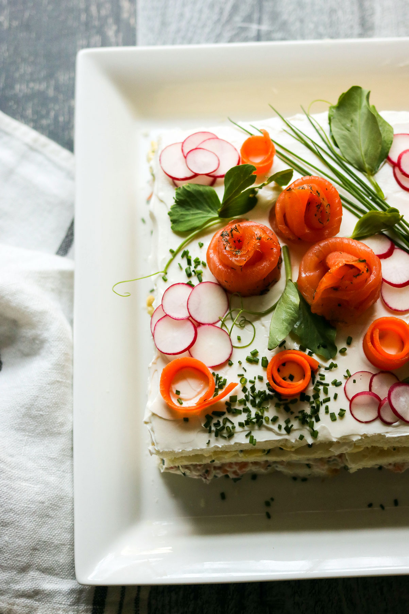

Smörgåstårta Recipe
Description
Smorgastarta, Swedish Sandwich Cake, beautiful to the eye, and layers of flavors and textures to feast on.
At first glance, you think wow this is a wonderful cake, but then you look closer and you realize this is savory with notes of smoked salmon and dill, radishes, egg salad, and chives tweaking the flavor at each stop!
Ingredients
- White Bread - sliced; crust removed
- Smoked Salmon - with dill
- Chives - Chopped and a few long sprigs for decoration
- Eggs
- Mayo
- Parsley
- Lemon Juice
- Greek Yogurt - plain
- Cream Cheese
- Radishes
- Pea Shoot Greens
Prep
- The salmon is chopped nice and fine and combined with some of the yogurt/cream cheese mixture, taking a few of the fillets and making these beautiful rosettes.
- Egg salad is mixed up with some mayo, parsley, lemon juice, and seasoning.
- The radishes thinly cut into rounds.
- Some filleted carrots, pea shoot greens, and I believe we are ready to assemble this baby.
Steps
- So, for the first layer, a nice slathering of the yogurt and cream cheese, a sprinkle of chopped chive which we got out of our own garden.
- Next, the smoked salmon creamy mixture.
- I love the colors happening right now and it smells so so good. Down go a few more slices of the bread and we are ready for level two.
- Again, a nice spread of the yogurt cream cheese mixture which helps hold the layers together, some more chives. On goes the egg salad and layer two is complete.
Other Recipes:
Back to Home